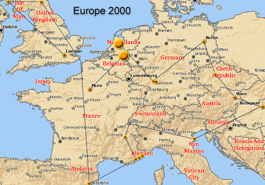

|

Eindhoven, Netherlands (2000-06-16) Day 4:
 Ryan
and I are in Eindhoven after taking the night train from Paris. The long
night didn't afford much sleep, but we're feeling fine. I'm writing from
Takeover 2000, which is GREAT! We spent the day in this city because we
arrived very early. There was much to explore. Much more peaceful than
Paris, it is similar to the midwest we are used to. The city however is
more modern, and mixes a hearty downtown
with country landscape well. The crosswalk signs tick, so blind can cross
safely, and there are roads specifically for bikes. We explored a great
area of town with shops, which is prepared for the soccer fans. A game
was played here yesterday, and tonight the Netherland's team won again!
But, the true excitement is TakeOver. I'm in a large auditorium that filled
instantly at the start with computers, speakers, and tech gadgets. Demo
music is playing loudly everywhere. People are programming, composing music,
creating art, and playing games everywhere. It's most excellent -- we have
two full days for the competition part! Ryan
and I are in Eindhoven after taking the night train from Paris. The long
night didn't afford much sleep, but we're feeling fine. I'm writing from
Takeover 2000, which is GREAT! We spent the day in this city because we
arrived very early. There was much to explore. Much more peaceful than
Paris, it is similar to the midwest we are used to. The city however is
more modern, and mixes a hearty downtown
with country landscape well. The crosswalk signs tick, so blind can cross
safely, and there are roads specifically for bikes. We explored a great
area of town with shops, which is prepared for the soccer fans. A game
was played here yesterday, and tonight the Netherland's team won again!
But, the true excitement is TakeOver. I'm in a large auditorium that filled
instantly at the start with computers, speakers, and tech gadgets. Demo
music is playing loudly everywhere. People are programming, composing music,
creating art, and playing games everywhere. It's most excellent -- we have
two full days for the competition part! |
Eindhoven, Netherlands (2000-06-17) Day 5:
Party is just getting started, one day underway!
It'll be a long night tonight!
Eindhoven, Netherlands (2000-06-18) Day 6:
| (blink,
blink) Ok, so this is Sunday, I haven't gotten real sleep since Thursday
morning. =) The party is STILL going strong, of course. The big competitions
are yet ahead, but this is a good chance to get on the internet. I helped
code parts of a 64kB intro* with a guy, which was rather cool. (He had
all the dirty work done already, I just helped add effects.) It's been
a great party here --- I'm going to sleep like a rock sometime very very
soon. *--An intro is a very small executable program which plays music
and makes cool colorful animations in real time (not prerecorded) on a
computer. |
Eindhoven, Netherlands (2000-06-18) Day 6:
Takeover finished. The main event demos were great,
especially the first place winner VIP2! We had a really nice time here.
I'm really happy with the Netherlands, everyone has been very very nice
to us, and the country is beautiful.
Amsterdam, Netherlands (2000-06-18) Day 6:
| We
arrived, barely awake, had some pizza, stopped by a coffee shop, took a
short walk, and crashed for almost 12 hours of sleep. The stay was in 'Bob's
Hostel', which is our first hostel stay in Europe. Not bad at all, in fact,
a huge improvement from 30 minute naps sitting at tables at the party! |
Amsterdam, Netherlands (2000-06-19) Day 7:
| Ryan
and I met up with Julie and Debbie in Dam Square. We walked south to Vondel
Park (very large park). The city is very nice, trams run along the streets,
and many bicycles. Later went to see Boom Chicago, an improve comedy show. They geared
it heavily for both locals and tourists. Great time. |
Amsterdam, Netherlands (2000-06-20) Day 8:
| Went
to the Zandvoort beach, a quick train trip from Amsterdam, with Julie and
Debbie. I build a rather nice sand castle, two arches.. =) My
back is rather red now.. however.. ;) It also seems that I had sun block
lotion on my hands, and then placed them on my back, so I have two ghost
hand marks (it turns out these stayed around for months). |
Amsterdam, Netherlands (2000-06-21) Day
9: Nice evening last night, tried
some 'bubblegum' J, which was really nice! Brought a group of friends back to
the hostel and played chess and whatnot. Met Claudia from Chile, who spoke only
a little English. Speaking with her was interesting. We told her the Big Mouth
Frog Joke too. Today Ryan and I saw the Anne Frank house. Rather moving. We're
chilling a bit, the weather is cooler which is nice. Funny thing about Amsterdam
is that we aren't seeing as many monuments &c, but more just having a good
time. Netherland vs France tonight too!!! BIG GAME! (Big Mouth Frog Joke: Debbie told this to us somewhere in
Paris. She messed up and had to restart, which made it all the better. The joke
is about a frog who always speaks REALLY LOUD WITH A BIG MOUTH, and asks the
other animals what they do. The owl that he meets says, "I eat big mouth frogs,"
and the frog says 'oh' in a tiny little voice. Humor is in a grand performance
with someone playing the part of the big mouth frog slowly with a nice gaping
mouth.)
Amsterdam, Netherlands (2000-06-22) Day 10:
Bumps Ahead! “Let Op! Drempels!” (These signs were
all over the Netherlands indicating speed bumps.) “The Sleepiest
way to travel? The sleepy car!” The space cakes were quite a trip! Debbie
writes, “Oranje 4-ever! Please vote for the oranje. Who is this going to?
Will Vince still love me tomorrow? What if you fvcked you like a banana
because I am shaking.” [image of gnome on a snail = $]. “Are we still in
Dam Square, or are we walking?”
|